Créer des histoires pour la Lunii avec Story Studio
Story Studio est un éditeur Windows open source pour créer des histoires pour la Lunii, importer, corriger, organiser, tester et exporter des packs d'histoires compatibles Lunii. Tout se fait dans une interface visuelle, avec vos images, vos sons, vos menus et vos chemins de navigation.
Si vous cherchez un outil pour créer des histoires pour la Lunii, Studio Story est fait pour vous. Le projet reste local, gratuit et pensé pour créer facilement et visuellement vos histoires audio.
Nouveautés de la version 0.9.2
- Vérificateur/correcteur de packs communautaires avec analyse audio, image, métadonnées et navigation.
- Workflow audio plus propre : FLAC jusqu'à l'export, volume cible, limiteur de crête et silences mesurés.
- Découpage audio avant utilisation et import direct depuis des podcasts RSS.
- Refonte complète de l'interface pour mieux comprendre les actions, les états et les rails de navigation.
- Améliorations de l'arbre, du diagramme, du relink des médias manquants et de l'éditeur image.
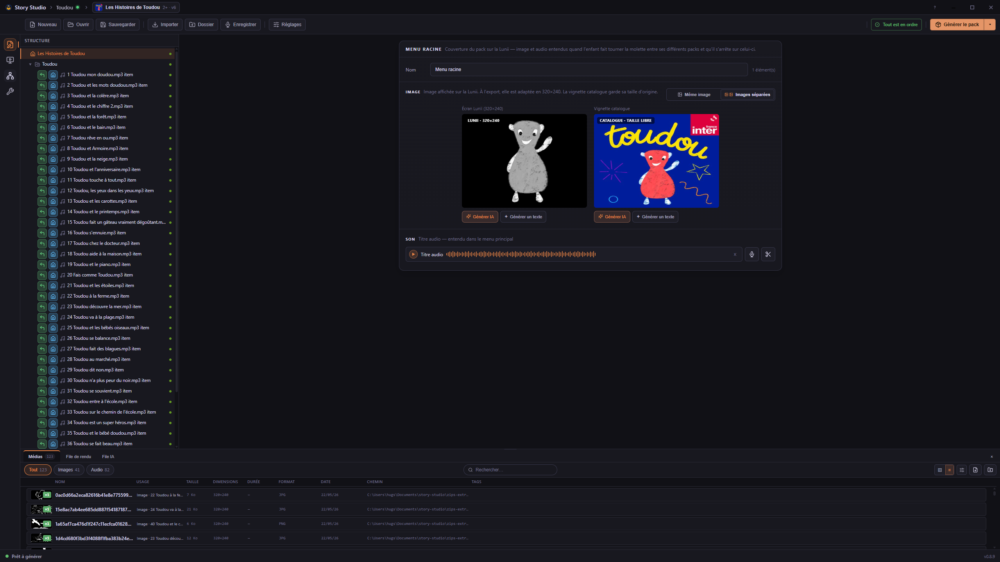
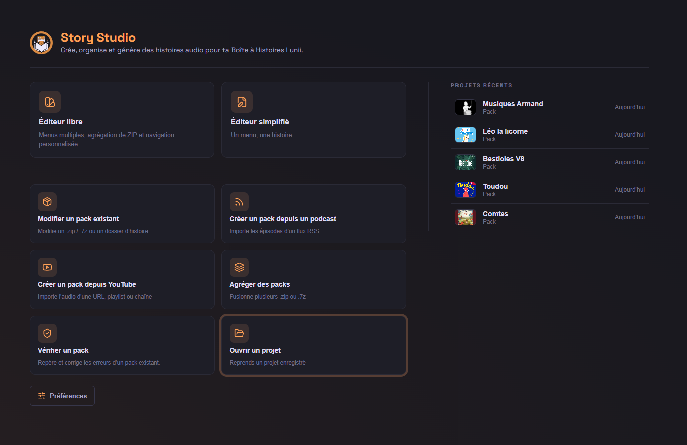
Démarrez en quelques secondes
Un écran d'accueil clair pour retrouver vos projets récents, importer un pack existant ou en créer un nouveau. Pas de menus cachés, pas de configuration interminable.
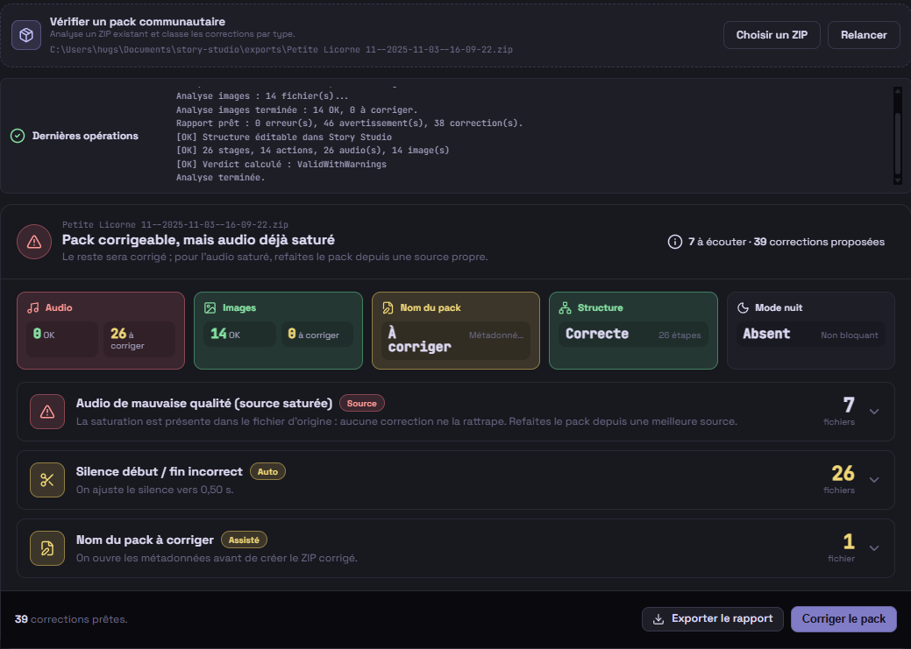
Vérifiez les packs communautaires
Analysez un ZIP avant de le partager ou de le corriger : métadonnées, images, audio, silences, saturation et navigation sont résumés dans un rapport lisible.
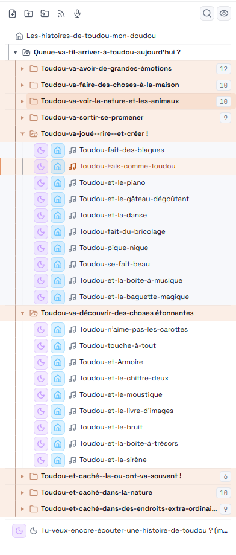
Repères de navigation lisibles
Les badges et états de l'arbre rendent les retours, l'accueil et les chemins particuliers plus visibles pendant l'édition. Vous gardez le parcours final sous les yeux.
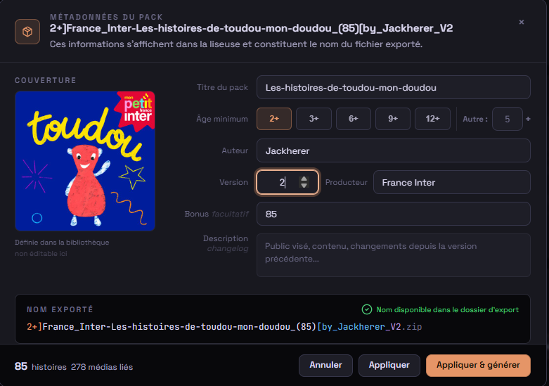
Métadonnées du pack
Préparez le nom exporté, la couverture, l'âge conseillé, l'auteur, la version et la description dans une fenêtre dédiée avant de générer votre pack.
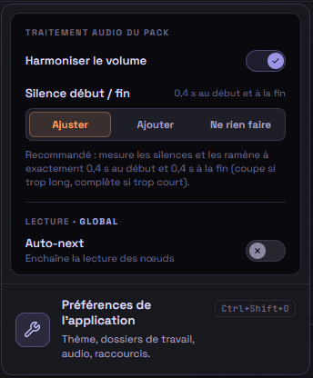
Options du pack au bon endroit
Les réglages de génération sont regroupés dans un popover clair, accessible depuis la barre d'outils, sans encombrer l'éditeur principal.
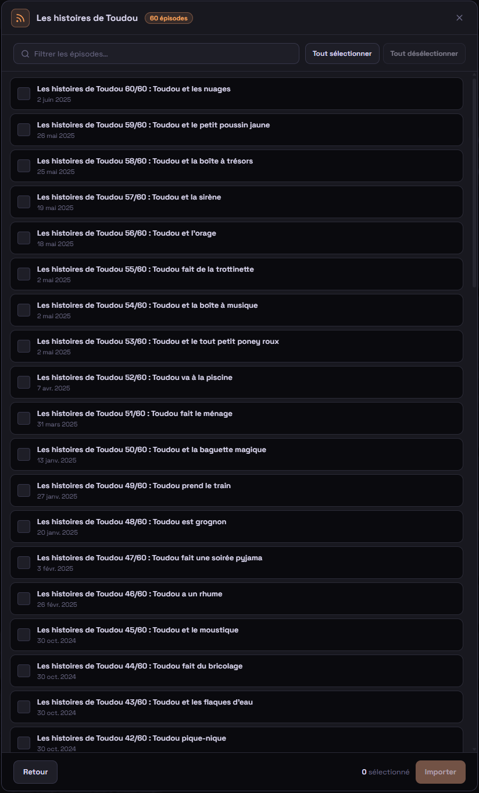
Importez depuis un podcast
Récupérez des épisodes depuis un flux RSS et transformez-les plus vite en contenus prêts à organiser dans votre pack.
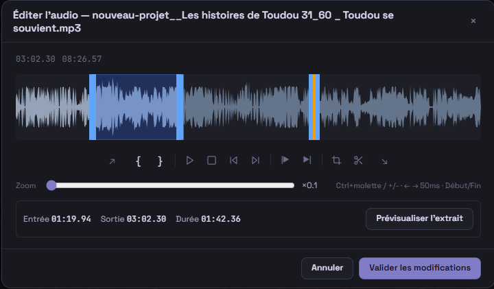
Audio sans complication
Enregistrez votre voix au micro, coupez, ajoutez des fondus, assemblez plusieurs fichiers en une seule piste — directement dans l'app.
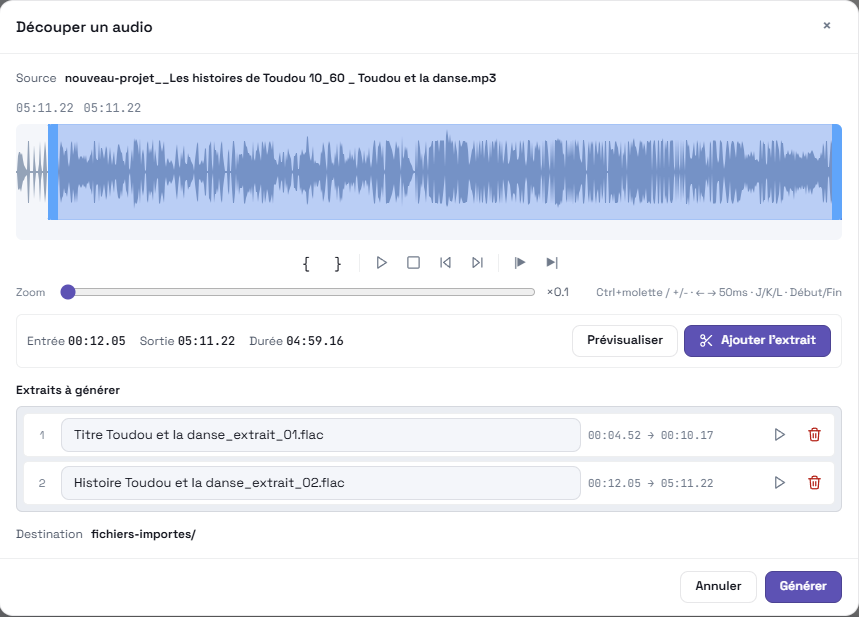
Découpez avant d'utiliser
Séparez une longue piste en plusieurs segments avant de l'associer à une histoire, un menu ou un assemblage audio.
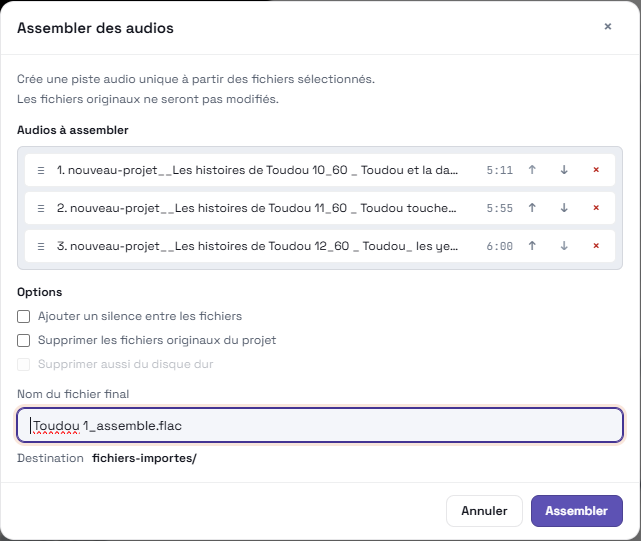
Assemblez vos pistes
Combinez plusieurs fichiers audio en une seule narration, en gardant un flux de travail clair avant l'export final.
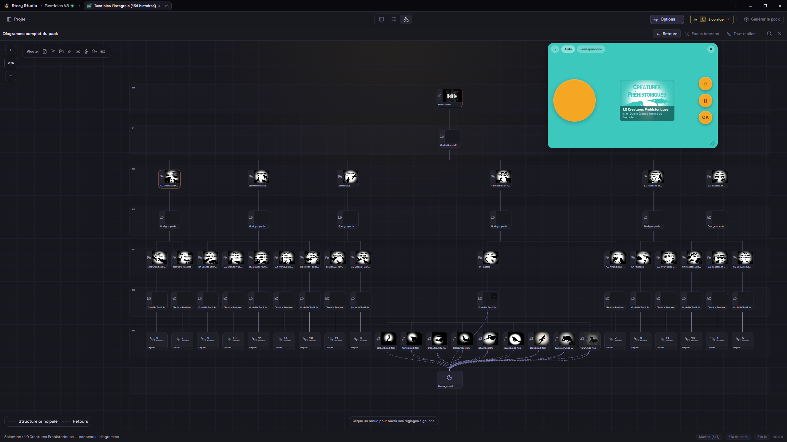
Testez avant d'exporter
Visualisez la navigation de votre pack sous forme de diagramme, et lancez le simulateur intégré pour vérifier le résultat comme si vous étiez sur la conteuse. Plus de mauvaises surprises après transfert.
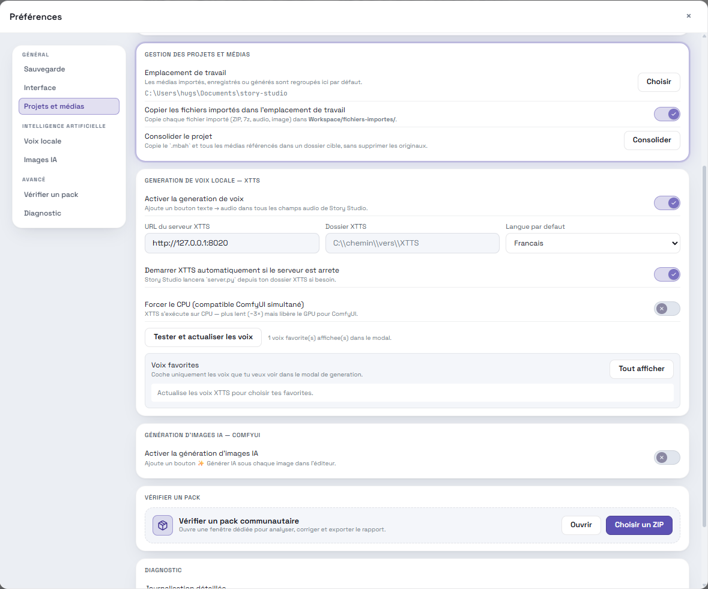
Personnalisez à votre goût
Thème clair, sombre ou système, raccourcis clavier configurables, workspace à choisir. Story Studio s'adapte à votre façon de travailler, pas l'inverse.
Pourquoi Story Studio ?
Je cherchais un outil simple pour créer des histoires audio pour mon enfant. En tant qu'ancien monteur vidéo, je ne retrouvais pas dans les outils existants ce qui me semblait essentiel : une interface visuelle, directe et fluide, permettant de construire une narration sans friction, sans ligne de commande ni structures de dossiers complexes.
Story Studio est né de ce besoin : rassembler l'import, les images, l'audio, la navigation, la simulation et l'export dans un même espace clair, local et compréhensible.
Comment installer
Téléchargez l'installeur
Cliquez sur le bouton « Télécharger pour Windows » en haut de la page. Le fichier se trouve ensuite dans votre dossier Téléchargements.
Double-cliquez sur le fichier
Lancez l'installeur (.exe) et suivez les étapes. Windows peut
afficher un avertissement SmartScreen : cliquez sur Informations
complémentaires puis Exécuter quand même.
Lancez Story Studio
Ouvrez Story Studio depuis le menu Démarrer ou le raccourci créé sur le bureau. Vous pouvez commencer votre premier pack tout de suite.